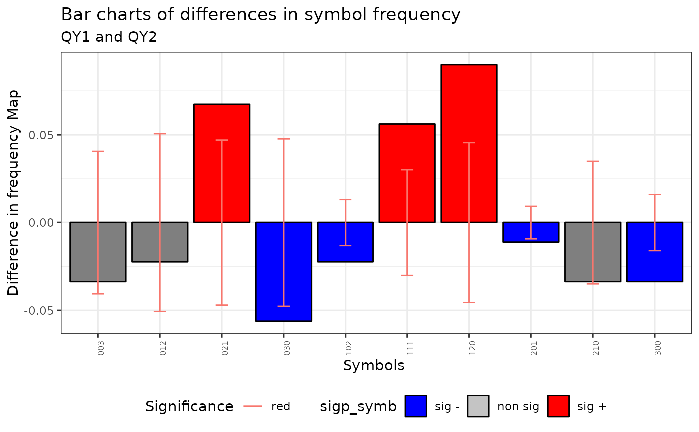
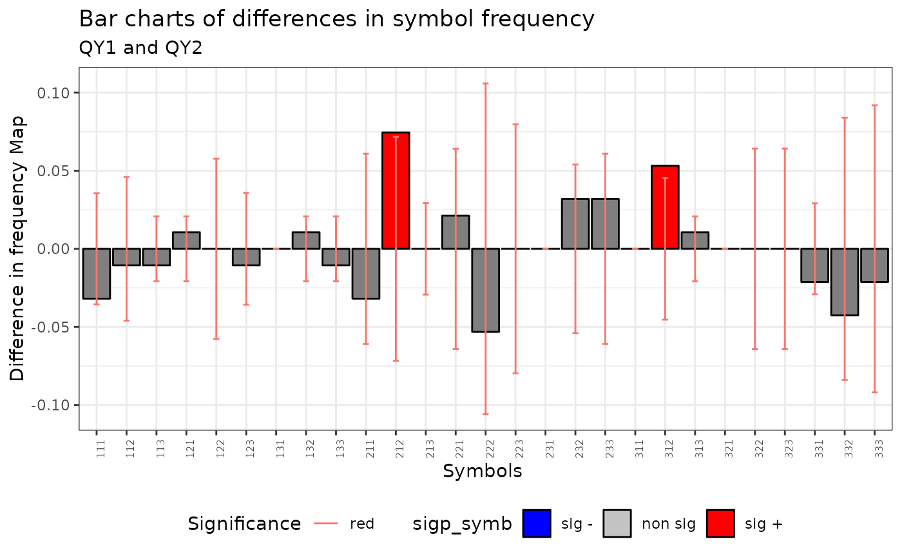
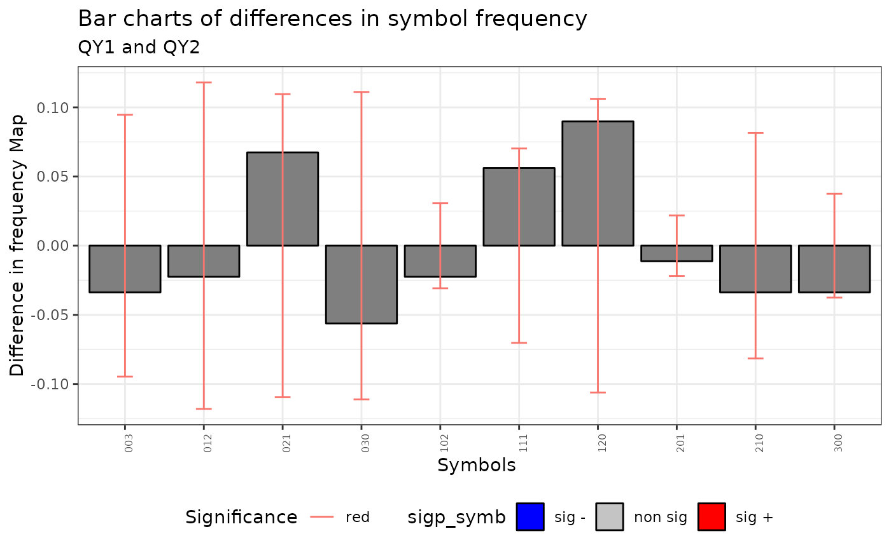

Compute the QE and QI tests of Equivalence and Independence between maps
Source:R/Q.map.test.R
Q.map.test.RdThis function compute the QE and QI tests for maps comparison based on symbolic entropy.
Q.map.test(formula = formula, data = data, coor = NULL, m = m, r = 1, type = "combinations", control = list())
Arguments
| formula | a symbolic description of the two factors. |
|---|---|
| data | (optional) a data frame or a sf object containing the variables to testing for. |
| coor | (optional) a 2xN vector with coordinates. |
| m | length of m-surrounding. |
| r | maximum overlapping between any two m-surroundings (default = 1). |
| type | Type of symbols: "permutations" or "combinations". Default "combinations" |
| control | Optional argument. See Control Argument section. |
Value
A list with two objects of the class htest. The first one
is the QE test of Equivalence between maps and the second one is the QI test
of independence between maps. the elements of each test are:
method | a character string giving description of the method. |
data.name | a character string giving the name(s) of the data. |
statistic | the value of the statistic QE or/and QI |
alternative | a character string describing the alternative hypothesis. |
p.value | p-value for QE or QI |
parameter | free degree of the statistic for QE or QI |
symb | A matrix with the symbols. |
mh | m-surrounding of th map. |
Tm | number of maps (ONLY 2). |
sample.size | number of symbolized observations. |
nsk | a matrix Tm x symbols with the frequency of the number of symbols of each map |
Details
Aquí Antonio escribe una linda historia ...
If data is not a sf object the coor argument with the coordinates of each observation must be included.
Control arguments
Several parameters to construct the m-surrounding
- dtmaxabs
Delete degenerate surrounding based on the absolute distance between observations.
- dtmaxpc
A value between 0 and 1. Delete degenerate surrounding based on the distance. Delete m-surrounding when the maximum distance between observation is upper than k percentage of maximum distance between anywhere observation.
- dtmaxknn
A integer value 'k'. Delete degenerate surrounding based on the near neighborhood criteria. Delete m-surrounding is a element of the m-surrounding is not include in the set of k near neighborhood of the first element
- seedinit
seed to select the initial element to star the algorithm to compute the m-surroundings.
See also
Author
| Fernando López | fernando.lopez@upct.es |
| Román Mínguez | roman.minguez@uclm.es |
| Antonio | paez@gmail.com |
| Manolo | manuel.ruiz@upct.es |
@references
Ruiz M, López FA and A Páez (2011). Comparison of Thematic Maps Using Symbolic Entropy. International Journal of Geographical Information Science, 26, 413-439.
Ruiz, M., López, F., and Páez, A. (2010). Testing for spatial association of qualitative data using symbolic dynamics. Journal of Geographical Systems, 12(3), 281-309.0.
Examples
# Case 1: rm(list = ls()) N <- 200 cx <- runif(N) cy <- runif(N) x <- cbind(cx,cy) listw <- spdep::nb2listw(spdep::knn2nb(knearneigh(cbind(cx,cy), k = 4))) p <- c(1/6,3/6,2/6) rho = 0.5 QY1 <- dgp.spq(p = p, listw = listw, rho = rho) rho = 0.8 QY2 <- dgp.spq(p = p, listw = listw, rho = rho) dt = data.frame(QY1,QY2) m = 3 r = 1 formula <- ~ QY1 + QY2 control <- list(dtmaxknn = 10) qmap <- Q.map.test(formula = formula, data = dt, coor = x, m = m, r = r, type ="combinations", control = control) print(qmap) #> [[1]] #> #> Q-Map test of Equivalence for qualitative data. #> #> Symbols type: combinations #> #> Ratio Symbolized observations/Num symbols = 8.9 #> #> data: QY1 and QY2 #> QE = 262.92, df = 9, p-value < 2.2e-16 #> alternative hypothesis: two.sided #> #> #> [[2]] #> #> Q-Map test of Independence for qualitative data. #> #> Symbols type: combinations #> #> Ratio Symbolized observations/Num symbols = 8.9 #> #> data: QY1 and QY2 #> QI = 55.352, df = 81, p-value = 0.9869 #> alternative hypothesis: two.sided #> #> #> attr(,"class") #> [1] "qmap" "list" plot(qmap)plot(qmap, ci=.6)  plot(qmap[[1]]$mh) #> Error in plot.m_surr(qmap[[1]]$mh): object 'm' not found summary(qmap[[1]]$mh) #> #> Characteristics of m-surrounding: #> #> Number of m-surrounding (R): 89 #> Length of m-surrounding (m): 3 #> Number no-symbolized observations: 14 #> #> List of no-symbolized observations: #> 13 16 19 31 43 65 72 77 105 121 166 182 198 200 #> #> List of the degree overlaping: #> There are 2 m-surrounding that have intersection with 0 m-surrounding #> There are 12 m-surrounding that have intersection with 1 m-surrounding #> There are 75 m-surrounding that have intersection with 2 m-surrounding #> Mean degree of overlaping: 1.8202 control <- list(dtmaxknn = 20) qmap <- Q.map.test(formula = formula, data = dt, coor = x, m = m, r = r, type ="permutations", control = control) #> Warning: The ratio between the number of symbolized observations and the number of symbols is lower than 5. print(qmap) #> [[1]] #> #> Q-Map test of Equivalence for qualitative data. #> #> Symbols type: permutations #> #> Ratio Symbolized observations/Num symbols = 3.48 #> #> data: QY1 and QY2 #> QE = 291.59, df = 26, p-value < 2.2e-16 #> alternative hypothesis: two.sided #> #> #> [[2]] #> #> Q-Map test of Independence for qualitative data. #> #> Symbols type: permutations #> #> Ratio Symbolized observations/Num symbols = 3.48 #> #> data: QY1 and QY2 #> QI = 204.27, df = 676, p-value = 1 #> alternative hypothesis: two.sided #> #> #> attr(,"class") #> [1] "qmap" "list" plot(qmap)  plot(qmap[[1]]$mh) #> Error in plot.m_surr(qmap[[1]]$mh): object 'm' not found qmap <- Q.map.test(formula = formula, data = dt, coor = x, m = m, r = r, type ="combinations") print(qmap) #> [[1]] #> #> Q-Map test of Equivalence for qualitative data. #> #> Symbols type: combinations #> #> Ratio Symbolized observations/Num symbols = 9.9 #> #> data: QY1 and QY2 #> QE = 291.24, df = 9, p-value < 2.2e-16 #> alternative hypothesis: two.sided #> #> #> [[2]] #> #> Q-Map test of Independence for qualitative data. #> #> Symbols type: combinations #> #> Ratio Symbolized observations/Num symbols = 9.9 #> #> data: QY1 and QY2 #> QI = 57.947, df = 81, p-value = 0.9753 #> alternative hypothesis: two.sided #> #> #> attr(,"class") #> [1] "qmap" "list" plot(qmap)
control <- list(dtmaxknn = 10) qmap <- Q.map.test(formula = formula, data = dt, coor = x, m = m, r = r, type ="combinations", control = control) print(qmap) #> [[1]] #> #> Q-Map test of Equivalence for qualitative data. #> #> Symbols type: combinations #> #> Ratio Symbolized observations/Num symbols = 8.9 #> #> data: QY1 and QY2 #> QE = 262.92, df = 9, p-value < 2.2e-16 #> alternative hypothesis: two.sided #> #> #> [[2]] #> #> Q-Map test of Independence for qualitative data. #> #> Symbols type: combinations #> #> Ratio Symbolized observations/Num symbols = 8.9 #> #> data: QY1 and QY2 #> QI = 55.352, df = 81, p-value = 0.9869 #> alternative hypothesis: two.sided #> #> #> attr(,"class") #> [1] "qmap" "list" plot(qmap)  # Case 2: rm(list = ls()) data(Spain) m = 3 r = 1 formula <- ~ Coast + MenWoman qmap <- Q.map.test(formula = formula, data = spain.sf, m = m, r = r, type ="combinations") print(qmap) #> [[1]] #> #> Q-Map test of Equivalence for qualitative data. #> #> Symbols type: combinations #> #> Ratio Symbolized observations/Num symbols = 6 #> #> data: Coast and MenWoman #> QE = 70.32, df = 3, p-value = 3.645e-15 #> alternative hypothesis: two.sided #> #> #> [[2]] #> #> Q-Map test of Independence for qualitative data. #> #> Symbols type: combinations #> #> Ratio Symbolized observations/Num symbols = 6 #> #> data: Coast and MenWoman #> QI = 14.661, df = 9, p-value = 0.1007 #> alternative hypothesis: two.sided #> #> #> attr(,"class") #> [1] "qmap" "list" plot(qmap)
plot(qmap[[1]]$mh) #> Error in plot.m_surr(qmap[[1]]$mh): object 'm' not found control <- list(dtmaxknn = 6) qmap <- Q.map.test(formula = formula, data = spain.sf, m = m, r = r, type ="combinations", control = control) #> Warning: The ratio between the number of symbolized observations and the number of symbols is lower than 5. print(qmap) #> [[1]] #> #> Q-Map test of Equivalence for qualitative data. #> #> Symbols type: combinations #> #> Ratio Symbolized observations/Num symbols = 4.5 #> #> data: Coast and MenWoman #> QE = 51.755, df = 3, p-value = 3.378e-11 #> alternative hypothesis: two.sided #> #> #> [[2]] #> #> Q-Map test of Independence for qualitative data. #> #> Symbols type: combinations #> #> Ratio Symbolized observations/Num symbols = 4.5 #> #> data: Coast and MenWoman #> QI = 11.235, df = 9, p-value = 0.26 #> alternative hypothesis: two.sided #> #> #> attr(,"class") #> [1] "qmap" "list" plot(qmap[[1]]$mh) #> Error in plot.m_surr(qmap[[1]]$mh): object 'm' not found summary(qmap[[1]]$mh) #> #> Characteristics of m-surrounding: #> #> Number of m-surrounding (R): 18 #> Length of m-surrounding (m): 3 #> Number no-symbolized observations: 8 #> #> List of no-symbolized observations: #> 5 11 16 17 24 35 39 46 #> #> List of the degree overlaping: #> There are 1 m-surrounding that have intersection with 0 m-surrounding #> There are 10 m-surrounding that have intersection with 1 m-surrounding #> There are 7 m-surrounding that have intersection with 2 m-surrounding #> Mean degree of overlaping: 1.3333 # Case 3: rm(list = ls()) data(Newark) m = 3 r = 1 formula <- ~ IRISH + GERMAN control <- list(dtmaxknn = 6) qmap <- Q.map.test(formula = formula, data = Newark, coor = cbind(Newark$X,Newark$Y), m = m, r = r, type ="combinations", control = control) #> Error in Q.map.test(formula = formula, data = Newark, coor = cbind(Newark$X, Newark$Y), m = m, r = r, type = "combinations", control = control): include two factors print(qmap) #> Error in print(qmap): object 'qmap' not found plot(qmap) #> Error in h(simpleError(msg, call)): error in evaluating the argument 'x' in selecting a method for function 'plot': object 'qmap' not found plot(qmap[[1]]$mh) #> Error in h(simpleError(msg, call)): error in evaluating the argument 'x' in selecting a method for function 'plot': object 'qmap' not found